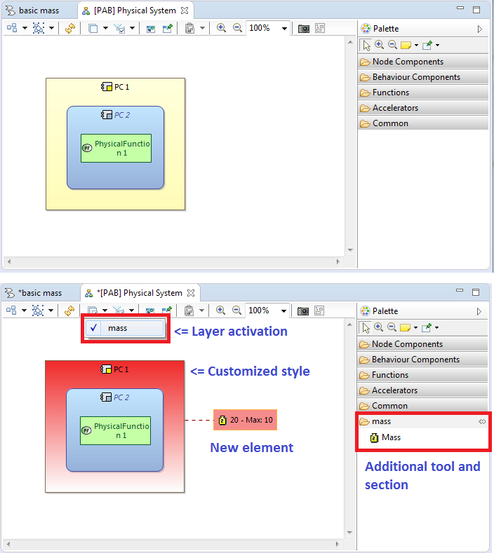

One can define either new kind of diagram, or layers for existing diagrams.
Diagram layers can provide additional elements on the diagram, additional tools in the palette and customized styling of already existing elements

Diagram layers can be defined using VPDSL
Diagram layers are defined the .diagram.vptext file of the VPDSL plugin
See Viewpoint Development page for more information.
Diagram layers and new diagrams can also be defined using Sirius odesign files.
One can define odesign files from scratch, or use VPDSL to initialize a first version of the odesign file and then modify it directly.
When defining a diagram in the .spec.vptext file of VPDSL plugin, VPDSL will generate a plugin ending with .design.
This plugin contains an odesign file in the folder description.
To know more about definition of odesign files, please have a look at the embedded help in Help / Help Contents / Sirius, or have a look at Sirius online resources: